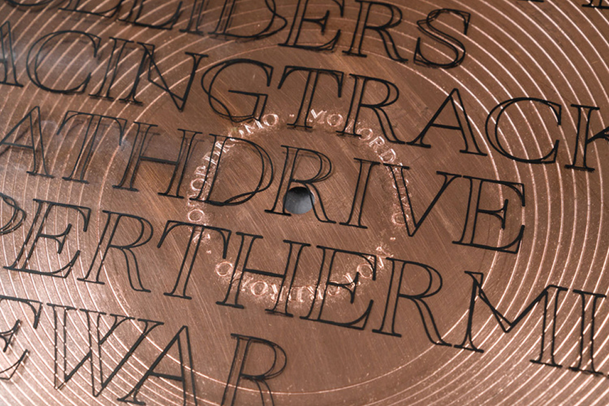
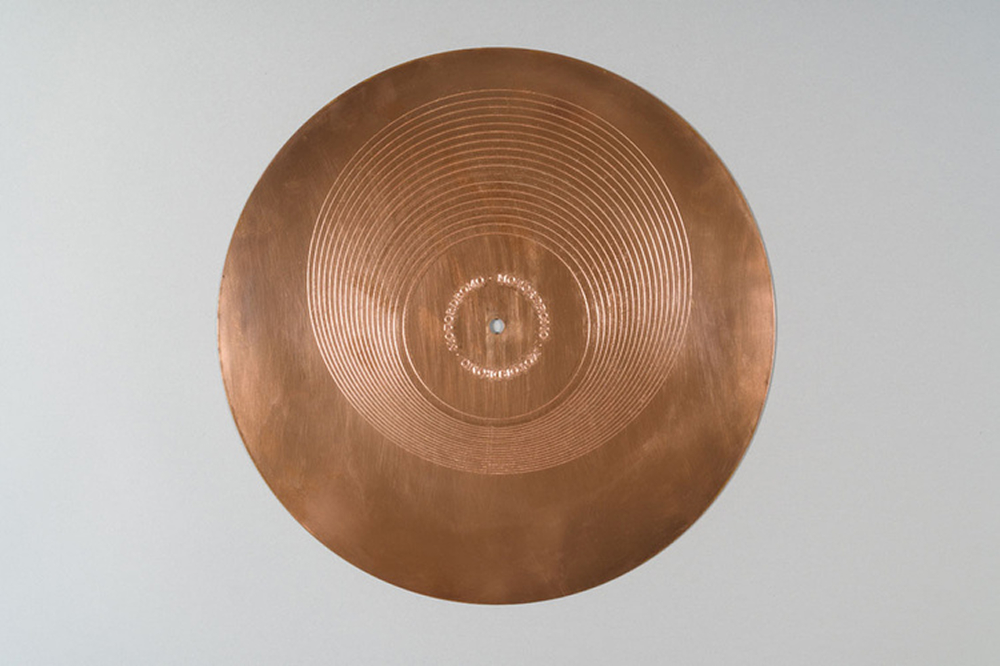
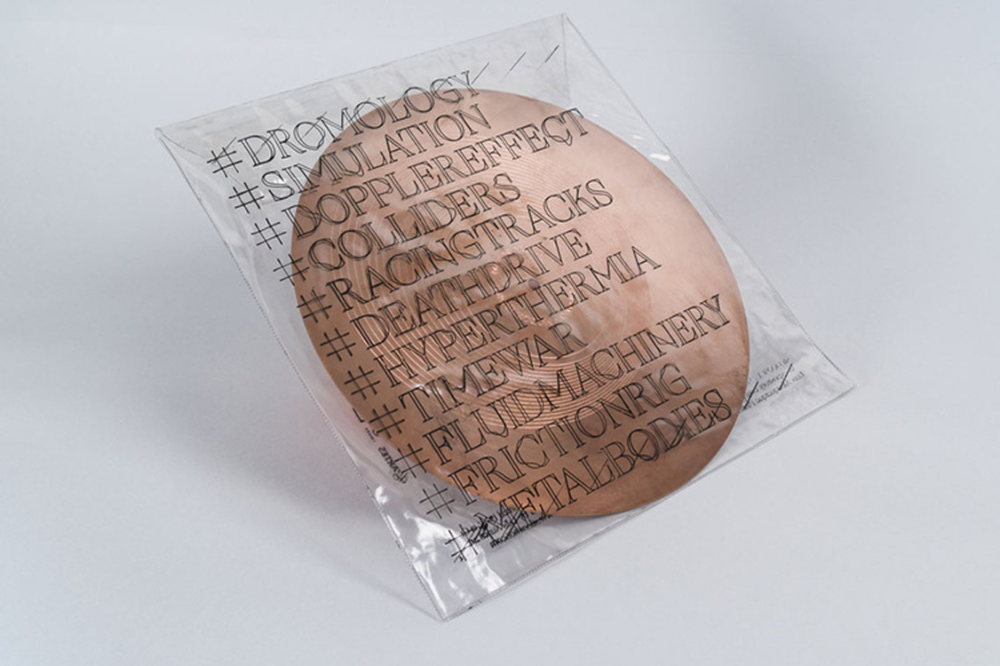

Acceleration Machinery / Information Circuits / Paranoid Entertainment / Dromological Sound System addressing the materiality of information speed embedded within copper’s temporal and spatial resolution through the scenics of techno culture. Capital's acceleration is deeply grounded in copper's proficiency to conduct signals through systems (matter/time) and also through its use as a high resolution matrix for printmaking. In fact, the proliferation of prints through Europe is partly a result of the cultural importance of card games as an instrument of financial support (matter/space).
With electronics, copper finds itself in a pivotal position as the primordial agent of connectivity, once again, due to tis density, enabling fast and accurate transferences of information. Within this system, a factual staging of speed takes place through a collection of engraved copper records that address and render the Doppler effect in two layers:
a) Visual — Based on diagrams that describe the Doppler effect, the engravings in the record depict the spatial articulation between a moving body and the waves emitted by that same body. A stationary object would be responsible for a structure of concentric circles irradiating from its original point, however, adding speed to the emitter, results in an eccentric schema where the signal waves are abandoned by their origin, which proceeds its trajectory, leaving behind an array of deprecated centres.
b) Sonic — Adopting this eccentric structure as record grooves forces the turntable's arm to oscillate back and forth, describing a sinusoidal trajectory that compromises the orthodox temporal linearity of the record player, resulting on the frequency modulation of signal described by the Doppler effect. text by Diogo Tudela


SALA 117, Porto
21.04.2018
Olinda Magalhães
SOOPA
República Portuguesa – Cultura / Direção-Geral das Artes
Silo Rumor
Luís Pinto Nunes,
Luís Albuquerque Pinho
Inês Afonso Lopes
Joana Pestana
Filipe Braga
5
Séria Grafia
Diogo Tudela